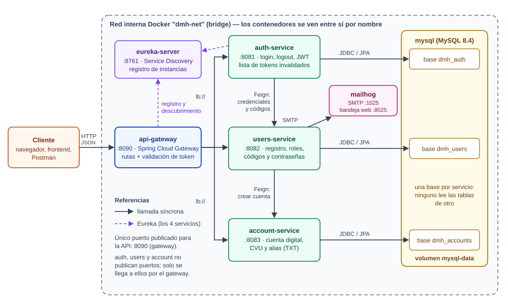
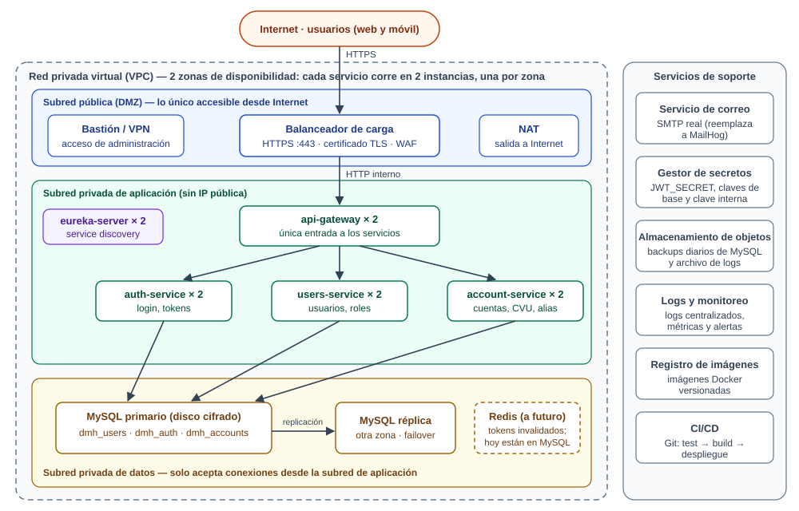

Qué se hizo, y en qué momento y para qué se usó cada herramienta y framework
Se construyó desde cero el backend del Sprint 1 como cinco microservicios con Java 21 y Spring Boot 3.5: registro de usuario con cuenta digital (CVU y alias), login con token JWT y logout que invalida el token. Se implementaron también las dos historias opcionales (verificación de email con código de 6 dígitos y recupero de contraseña por mail) y las tres épicas de soporte: testing, infraestructura y documentación.
Lo que no se pudo verificar. Docker Desktop no arranca en esta máquina: Windows no tiene habilitada la característica "Plataforma de máquina virtual", y habilitarla requiere permisos de administrador y reiniciar. Por eso el entorno con Docker Compose, MySQL y MailHog quedó escrito y validado en su sintaxis, pero no ejecutado. Todo lo demás se levantó y se probó de punta a punta con una base H2 en memoria y un servidor de correo falso. La sección 9 explica el problema y cómo destrabarlo.
| Pedido del Sprint 1 | Dónde está | Estado |
|---|---|---|
| API de registro: campos, CVU de 22 dígitos, alias de 3 palabras tomadas de un TXT, respuesta sin contraseña, errores 400 y 500 | POST /users/register · users-service + account-service · alias-words.txt | Hecho y probado |
| API de login: token, 404 usuario inexistente, 400 contraseña incorrecta, 500 | POST /auth/login · auth-service | Hecho y probado |
| El token mantiene la sesión al recargar la página | JWT sin estado, válido 60 minutos; el cliente lo guarda y lo reenvía (caso TC-038) | Hecho y probado |
| API de logout que invalida el token recibido en el header | POST /user/logout · lista de tokens invalidados en auth-service | Hecho y probado |
| Testing exploratorio con notas y organización | docs/testing/testing-exploratorio.md | Hecho |
| Testing kickoff: plan de pruebas | docs/testing/plan-de-pruebas.md | Hecho |
| Testing manual: planilla, clasificación smoke/regresión, ejecución de la suite | docs/testing/casos-de-prueba.xlsx | Hecho (2 casos bloqueados por Docker) |
| Infraestructura: Git, Docker, microservicios | Repositorio local con ramas; Dockerfile, docker-compose.yml | Docker sin ejecutar |
| Diseño de la infraestructura y boceto de la red | docs/infraestructura.md y sección 8 | Hecho |
| Opcional: recupero de contraseña con link por mail y pantalla para ingresar y repetir la clave | /auth/forgot-password, /auth/reset-password, reset-password.html | Hecho y probado |
| Opcional: verificación del email con código de 6 dígitos en el primer login | /auth/verify-email, /auth/verify-email/resend | Hecho y probado |
| Subir a GitLab/GitHub | El repositorio es local: el remoto y el push quedan a cargo del autor | Pendiente |
La tabla sigue el orden real del trabajo. La columna de la derecha dice qué herramienta o framework entró en juego en ese momento y para qué.
| # | Qué se hizo | Herramienta o framework, y para qué |
|---|---|---|
| 1 | Lectura de la consigna y de la guía de stack. Se decidió usar JWT en lugar de Keycloak (la guía permite ambos), crear los 5 servicios que propone y dar a cada servicio su propia base dentro de un mismo MySQL. | — |
| 2 | Relevamiento del entorno. Había JDK 21, Git, Eclipse y Docker instalado; no había Maven. | JDK Temurin 21: compilar y ejecutar. Maven Wrapper (mvnw): se agregó para compilar sin instalar Maven; descarga Maven 3.9.16 la primera vez y garantiza que todos usen la misma versión. |
| 3 | Repositorio. git init en una carpeta nueva, .gitignore y .gitattributes. | Git: historial con un commit por etapa. Se trabajó en dev; main y test son las otras ramas que pide la guía. |
| 4 | Proyecto Maven multi-módulo. Un pom.xml padre y un módulo por microservicio. | Maven: el POM padre hereda de spring-boot-starter-parent 3.5.16 e importa el BOM de Spring Cloud 2025.0.3, así todas las dependencias de todos los módulos tienen versiones compatibles entre sí sin declararlas una por una. |
| 5 | eureka-server. | Netflix Eureka Server (@EnableEurekaServer): registro donde cada servicio anota su dirección al arrancar. |
| 6 | account-service. Entidad Account, generadores de CVU y alias, endpoint interno para crear la cuenta. | Spring Web (controllers REST), Spring Data JPA (entidad y repositorio; crea la tabla sola), Bean Validation (validar el body), Spring Security (proteger los endpoints). SecureRandom de Java para el CVU y para elegir las palabras del TXT. |
| 7 | users-service. Entidades User y Role, registro, código de verificación, token de recupero, mails. | Lo anterior más OpenFeign (llamar a account-service como si fuera una interfaz Java), BCrypt de Spring Security (guardar el hash de la contraseña), Spring Mail (enviar los correos) y eventos transaccionales de Spring (mandar el mail recién después del commit). |
| 8 | auth-service. Login, emisión y validación del token, logout. | jjwt (crear y verificar el JWT firmado con HS256), OpenFeign con un ErrorDecoder (traducir el 404 y el 400 de users-service), Spring Data JPA (lista de tokens invalidados) y @Scheduled (borrar los ya vencidos). |
| 9 | api-gateway. Rutas y filtro global de autenticación. | Spring Cloud Gateway (rutas lb://servicio resueltas por Eureka) y WebClient con @LoadBalanced (preguntarle a auth-service si el token es válido antes de dejar pasar). |
| 10 | Manejo de errores en cada servicio. | @RestControllerAdvice + @ExceptionHandler de Spring MVC: una clase global que convierte cada excepción en su código HTTP con un JSON uniforme. |
| 11 | Documentación de la API. | springdoc-openapi: genera el contrato OpenAPI desde los controllers y sirve Swagger UI. El gateway los unifica en una sola pantalla. |
| 12 | Tests automatizados escritos junto con cada servicio. | JUnit 5 (ejecutor), Mockito (simular dependencias), AssertJ (verificaciones), MockMvc de Spring Boot Test (peticiones HTTP al servicio completo sin abrir un puerto) y H2 (base en memoria para no depender de MySQL). |
| 13 | Contenedores. Dockerfile, docker-compose.yml, script de inicialización de MySQL. | Docker (una imagen por servicio, compilada en dos etapas) y Docker Compose (los 7 contenedores, la red y el volumen). MySQL 8.4 como base y MailHog como servidor de correo de prueba. Validado con docker compose config. |
| 14 | Docker no arrancó. Se diagnosticó la causa y se armó una forma alternativa de levantar todo. | Perfil de Spring h2 (misma aplicación, base H2 en lugar de MySQL), un servidor SMTP falso en Python y scripts de PowerShell para arrancar y apagar los 5 servicios. |
| 15 | Primera prueba de punta a punta por el gateway: registro → verificación → login → logout. | curl para enviar las peticiones. |
| 16 | Testing exploratorio: 4 sesiones, alrededor de 100 pruebas, 5 defectos. | curl y Python (peticiones simultáneas, tokens adulterados), logs de los servicios. |
| 17 | Corrección de los 5 defectos, cada uno con su test. | Bean Validation (@Pattern, @Email), Jackson (rechazar tipos incorrectos), ErrorWebExceptionHandler del gateway, y una entidad JPA nueva para cerrar sesiones al cambiar la clave. |
| 18 | Casos de prueba y planilla. 72 casos con su ficha; se ejecutaron y se registró el resultado. | Python (run_test_suite.py ejecuta los casos contra el sistema; build_test_sheet.py arma el .xlsx). Se abrió con Excel para comprobar que el archivo es válido. |
| 19 | Documentación: plan de pruebas, infraestructura, diagramas, README y este informe. | Markdown, SVG para los diagramas y Chrome sin interfaz para generar este PDF. |
Sobre Eclipse. El código no se tipeó dentro de la interfaz de Eclipse: se escribió archivo por archivo y se compiló con Maven Wrapper desde la terminal. El proyecto es un proyecto Maven estándar, así que Eclipse lo abre con File → Import → Maven → Existing Maven Projects (sección 10). No se usó Lombok a propósito, para que Eclipse no necesite ningún plugin adicional. La importación en Eclipse no se ejecutó durante este trabajo: es lo primero para comprobar al abrirlo.

| Servicio | Puerto | Responsabilidad | Base |
|---|---|---|---|
eureka-server | 8761 | Registro de servicios: quién está levantado y en qué dirección. | — |
api-gateway | 8090 | Única entrada. Enruta según la URL y exige un token válido en toda ruta que no sea pública. | — |
auth-service | 8081 | Login, emisión y validación del JWT, logout. Expone los endpoints públicos de verificación de email y recupero de contraseña y los delega en users-service. | dmh_auth |
users-service | 8082 | Dueño de los datos del usuario: registro, roles, contraseña, códigos, tokens de recupero, envío de mails. | dmh_users |
account-service | 8083 | Cuenta digital: genera CVU y alias, guarda el saldo. | dmh_accounts |
El puerto del gateway es 8090 y no el habitual 8080 porque en esta máquina el 8080 ya está ocupado por otro proceso del sistema.
| Herramienta | Dónde se ve en el proyecto | Para qué se usó |
|---|---|---|
| Java 21 | Todo el código. record para los DTO. | Lenguaje. Los record dan clases de datos inmutables sin escribir getters, y evitan depender de Lombok. |
| Spring Boot 3.5 | Clase *Application y application.yml de cada módulo. | Arranca cada servicio con servidor web embebido y configuración automática. Cada servicio es un .jar ejecutable. |
| Spring Web (MVC) | Paquetes controller y exception. | Endpoints REST (@RestController) y manejo global de errores (@RestControllerAdvice). |
| Bean Validation | RegisterRequest, LoginRequest y demás DTO. | Validar la entrada con anotaciones (@NotBlank, @Email, @Size, @Pattern). Si algo falla, responde 400 con el detalle por campo. |
| Spring Data JPA (Hibernate) | Paquetes model y repository. | Mapear clases a tablas y consultar sin escribir SQL (findByEmail, existsByCvu). Crea las tablas a partir de las entidades. |
| MySQL 8.4 | docker-compose.yml, docker/mysql/init.sql. | Base relacional del entorno con Docker. Una base por servicio. |
| H2 | application-test.yml y application-h2.yml. | Base en memoria para los tests y para trabajar sin Docker. |
| Spring Security | Paquete security de cada servicio. | Cadena de filtros que decide qué rutas son públicas y cuáles exigen autenticación; @PreAuthorize para "solo el dueño o un administrador"; BCryptPasswordEncoder para las contraseñas. |
| JWT (jjwt 0.13) | JwtService, JwtAuthenticationFilter. | Token firmado que lleva el id del usuario, su email y sus roles. Cada servicio lo verifica con el secreto compartido, sin consultar una sesión en el servidor. |
| Eureka (Spring Cloud Netflix) | eureka-server; bloque eureka: de cada application.yml. | Descubrimiento de servicios: nadie tiene direcciones fijas en la configuración, se buscan por nombre. |
| Spring Cloud Gateway | api-gateway: rutas en application.yml, AuthenticationFilter, GatewayErrorHandler. | Puerta de entrada única: enrutar, validar el token, CORS y errores uniformes. |
| OpenFeign | AccountClient (en users), UsersClient (en auth), InternalFeignConfig. | Llamadas HTTP entre servicios declaradas como una interfaz Java. Resuelve la dirección por Eureka y agrega la clave interna a cada llamada. |
| Spring Mail | MailService en users-service. | Enviar el código de verificación y el link de recupero. |
| MailHog | docker-compose.yml. | Servidor de correo de prueba: atrapa los mails y los muestra en una página web, sin enviar nada de verdad. |
| springdoc-openapi (Swagger) | OpenApiConfig; anotaciones @Operation en los controllers. | Documentación navegable de la API, con la posibilidad de probar cada endpoint. |
| JUnit 5, Mockito, AssertJ, MockMvc | src/test de cada módulo. | Tests unitarios y de integración. Se ejecutan con mvnw verify. |
| Maven + Maven Wrapper | pom.xml, mvnw, mvnw.cmd. | Dependencias, compilación, tests y empaquetado. |
| Docker y Compose | Dockerfile, docker-compose.yml, .env.example. | Empaquetar y levantar todo el entorno con un comando. |
| Git | Historial del repositorio. | Control de versiones, con un commit por etapa (git log --oneline). |
| Python y PowerShell | Carpeta scripts. | Auxiliares, fuera de la aplicación: correo falso, arranque local, ejecución de casos y armado de la planilla. |
POST /users/registerusers-service (lo ubica en Eureka).UserService verifica que el email y el DNI no existan (400 si existen), calcula el hash BCrypt de la contraseña, asigna el rol ROLE_USER, genera el código de verificación y guarda el usuario con JPA.account-service, que genera un CVU de 22 dígitos y un alias de 3 palabras del archivo alias-words.txt, comprueba que no estén repetidos y guarda la cuenta.@Transactional): si account-service falla, el usuario no queda guardado y se responde 500.POST /auth/loginauth-service (ruta pública).AuthService pide las credenciales a users-service por Feign. Si el usuario no existe, el ErrorDecoder convierte el 404 en la misma respuesta 404 para el cliente.POST /user/logoutAuthorization: Bearer …. El gateway lo valida y pasa la petición a auth-service.auth-service guarda el identificador del token (jti) en la tabla de tokens invalidados y responde 200.auth-service si el token sigue siendo válido. Un JWT no se puede "borrar"; por eso hace falta esa lista.POST /auth/verify-email con el código lo habilita. El código vence a los 15 minutos y se bloquea tras 5 intentos fallidos; se puede pedir otro.POST /auth/forgot-password envía un mail con un link a reset-password.html, una pantalla que pide la contraseña nueva dos veces. El link vence a los 30 minutos y sirve una sola vez. En la base se guarda solo el hash del token. Cambiar la contraseña cierra todas las sesiones abiertas del usuario.Rol asociada al usuario (ROLE_USER, ROLE_ADMIN). Los datos de un usuario y su cuenta solo los puede ver su dueño o un administrador (403 para el resto). No se incluyó un alta de administradores: hoy todo usuario registrado es ROLE_USER./internal/**): no tienen ruta en el gateway y exigen una clave compartida entre servicios.auth-service y, además, cada servicio vuelve a verificar la firma y los permisos.| Nivel | Qué se hizo | Resultado |
|---|---|---|
| Tests automatizados (JUnit) | Unitarios de las reglas de negocio y de integración de cada servicio completo (HTTP, seguridad y base H2), con los otros servicios simulados. mvnw verify. | 125 de 125 pasan account 56 · users 30 · auth 25 · gateway 13 · eureka 1 |
| Casos de prueba de sistema | 72 casos con precondiciones, pasos y resultado esperado, ejecutados contra los 5 servicios levantados, entrando por el gateway. Clasificados en suite de humo (9) y de regresión (72). | 70 pasan, 2 bloqueados (los que requieren Docker y MySQL) |
| Exploratorio | 4 sesiones con charter: registro, login y token, opcionales de mail, gateway y resiliencia. Incluyó peticiones simultáneas, tokens adulterados y apagar servicios. | 5 defectos, todos corregidos y verificados |
| ID | Severidad | Defecto | Corrección |
|---|---|---|---|
| DEF-004 | Alta | Cambiar la contraseña no cerraba las sesiones abiertas: quien recuperaba una cuenta robada no lograba echar al intruso. | auth-service registra el momento del cambio y rechaza los tokens anteriores. |
| DEF-001 | Media | El registro aceptaba emails sin dominio completo (a@b). | Validación más estricta del email. |
| DEF-003 | Media | Nombre y apellido aceptaban cualquier carácter, incluido HTML. | Solo letras de cualquier idioma, espacios, apóstrofes y guiones. |
| DEF-002 | Baja | El DNI enviado como número JSON se convertía a texto en silencio. | Se rechaza con 400. |
| DEF-005 | Baja | Con un servicio caído, el gateway respondía 500 con un formato distinto y sin mensaje. | Responde 503 con el formato común. |
Dos comprobaciones de resiliencia que salieron bien: con account-service apagado, el
registro responde 500 y no deja un usuario a medias ni envía el mail; con
auth-service apagado, el gateway responde 503 y no deja pasar peticiones sin validar.

En el entorno local todo corre en una red interna de Docker con un único puerto publicado para la API
(sección 3). Para producción se propone separar tres subredes: una pública con el balanceador (HTTPS),
una privada con los servicios duplicados en dos zonas, y una de datos con MySQL primario y réplica, más
almacenamiento de objetos para backups y logs. El detalle y la justificación de cada componente están en
docs/infraestructura.md.
| Problema | Causa y qué se hizo | Qué falta |
|---|---|---|
| Docker Desktop no arranca | Primero falló por archivos de socket residuales de una ejecución anterior; se renombraron las carpetas que los contenían (AppData\Local\Docker\run y docker-secrets-engine) para que Docker las recree. Superado eso, el log mostró la causa de fondo: "Virtual Machine Platform not enabled". No hay distribuciones WSL instaladas, o sea que Docker nunca llegó a funcionar en esta máquina. | Ejecutar como administrador wsl.exe --install --no-distribution, reiniciar y abrir Docker Desktop. Después: docker compose up -d --build y la suite con --mailhog. |
| Los servicios Java no arrancaban (Unable to establish loopback connection) | En el contexto en que se ejecutaron fallan los sockets de dominio Unix de Windows, que Java usa internamente (el mismo tipo de socket que le fallaba a Docker). Se resolvió con el argumento de JVM -Djdk.net.unixdomain.tmpdir=Q:\no-existe, que hace que Java use TCP. | Si al ejecutar desde Eclipse aparece ese error, agregar ese argumento en VM arguments. Si no aparece, no hace falta. |
| Puerto 8080 ocupado | Lo usa un proceso del sistema. El gateway se configuró en el 8090. | — |
| Sin MySQL local | Las pruebas de sistema se hicieron con H2 en modo de compatibilidad MySQL. | Repetir la suite contra MySQL (casos TC-086 y TC-087). |
Otros pendientes: crear el repositorio remoto y hacer push de las tres ramas; importar el
proyecto en Eclipse y confirmar que compila ahí; y las cuatro observaciones del testing exploratorio
(límite de intentos de login, respuesta unificada del login, formato del teléfono, y no publicar nunca
los puertos internos de los servicios).
DigitalMoneyHouse y dejar marcados los 6 proyectos.*Application → Run As → Java Application. Primero EurekaServerApplication; al final ApiGatewayApplication.auth-service, users-service y account-service, agregar -Dspring.profiles.active=h2..\mvnw.cmd verify # compila y corre los 125 tests .\scripts\start-local.ps1 # levanta todo sin Docker (perfil h2) python scripts\run_test_suite.py # ejecuta los 72 casos de prueba .\scripts\stop-local.ps1 # apaga todo docker compose up -d --build # todo con Docker, cuando esté disponible
Con el sistema levantado: API en http://localhost:8090, Swagger UI en
http://localhost:8090/swagger-ui.html y panel de Eureka en http://localhost:8761.
| Archivo | Contenido |
|---|---|
README.md | Cómo levantar el proyecto, tabla de endpoints, problemas conocidos. |
docs/informe-sprint-1.pdf | Este informe. |
docs/infraestructura.md | Diseño de la infraestructura, red y componentes, con los dos diagramas. |
docs/testing/plan-de-pruebas.md | Cómo escribir un caso, cómo reportar un defecto, criterios de smoke y de regresión. |
docs/testing/casos-de-prueba.xlsx | Los 72 casos, su suite y el resultado de la ejecución. |
docs/testing/testing-exploratorio.md | Sesiones, notas, defectos y observaciones. |